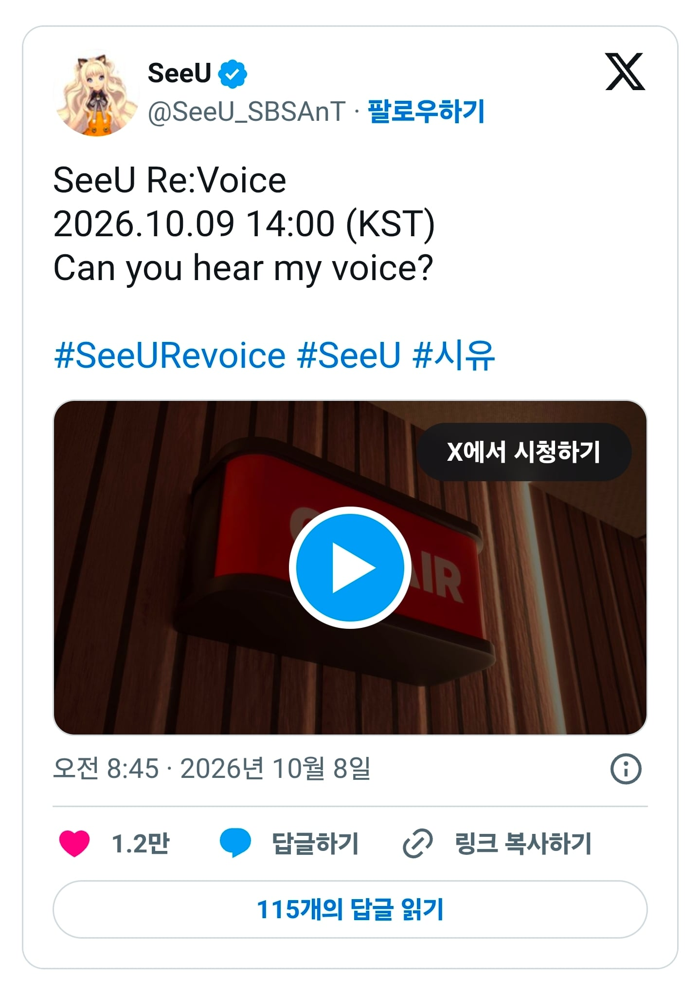
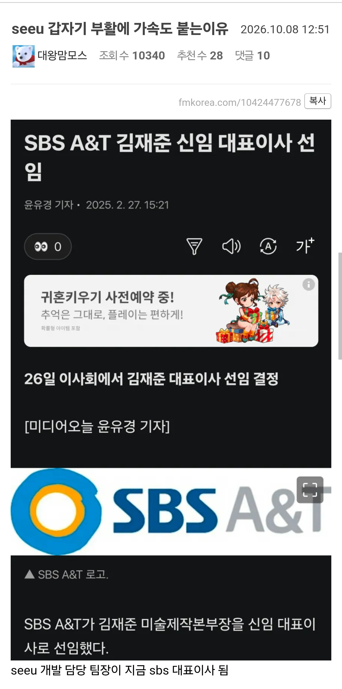
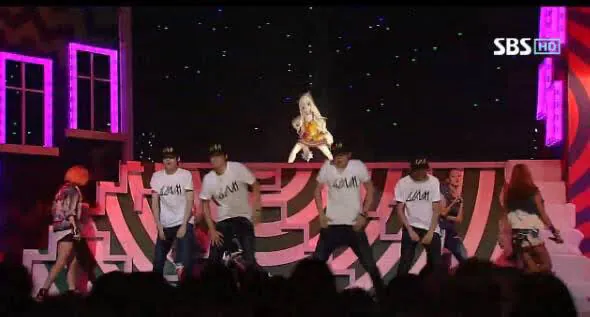

딸내미 살리기 ㄷㄷ

BTS 백댄서 시절


딸내미 살리기 ㄷㄷ

BTS 백댄서 시절
아미들 긴장해라 사단장 오신다.
장기이식 받았네
성대가 부활할 순 없을거고 껍데기에 뉴 네오 성대 장착하는건가
siuuuuuuuuuuu
여기 성대 전과가...읍읍
https://youtu.be/s5RF2YK2hc4?t=212
가사는 이 노래인가본데
하츠네미쿠처럼 기계성대가 아니야?
그 버튜버도 사람이 있어요
하츠네 미쿠도 그렇고 보컬로이드는 목소리 제공한 성우들이 따로 있음
보컬로이드 다 성우 따로 있음
애초에 목소리 제공자에게 수익이 돌아가는 구조는 아니었던 거 같던데
ㄷㄷ
랩몬아 인사안하고 뭐하냐...대슨배임 오셨는데
성우 어떻게 할려고
훈
련
은
전투다
앞에총
각
개
전
투
당신의 마음에 와 닿기 위해
나언제나 날위해 기다리고 있어줄 많은 사람위해
성우 바뀌나?
시유 목소리담당이 좀 멀리가셨는데 바꿔서 나오나보네
메타버스로 돈 빨기에는 좀 늦은거 아닌가
메타버스보다는 한국형 보컬로이드 시장이라 좀 다름 보컬로이드 시장 자체는 상당히 활발함
와 BTS를 백댄서 시킬정도면 체급이 어느정도인거임 ㄷㄷㄷㄷ